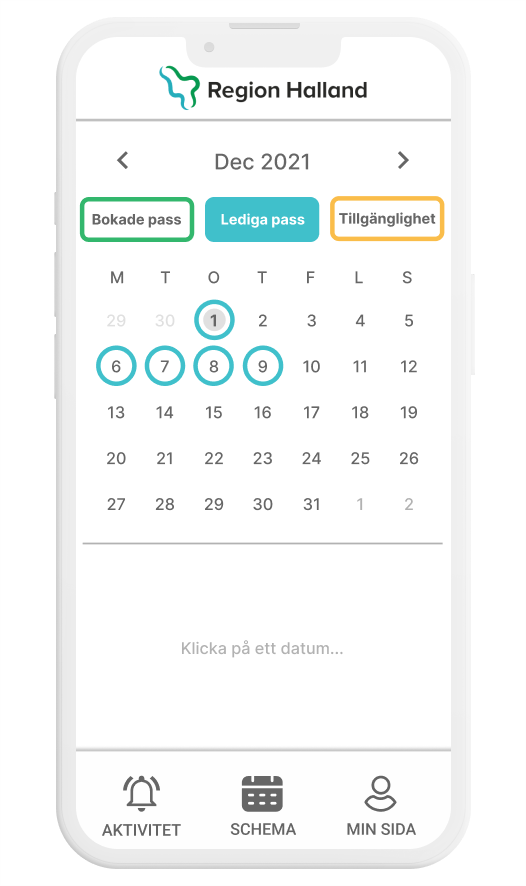
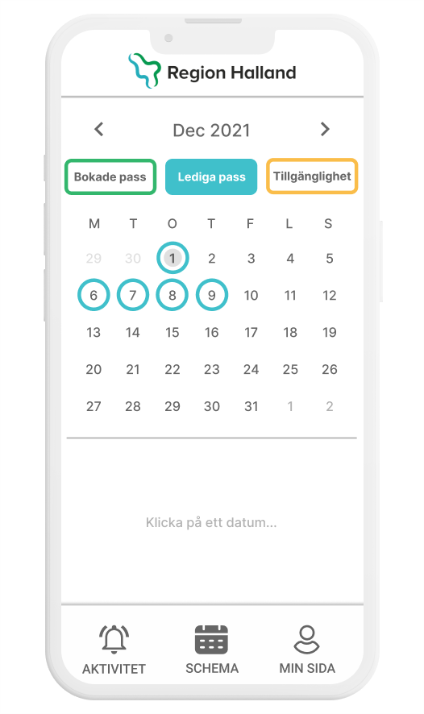

CASE STUDY
AMBULANSSJUKVÅRDEN REGION HALLAND
The briefs problems space encompassed Ambulanssjukvården Region Halland . Ambulanssjukvården Region Halland was in need of a more effective system for booking personnel who can drive and administer proper care inside of ambulances. This includes dividing work hours more efficiently and equally, seeing individual competences; as well as having an efficient overview of shifts that are missing personell and what competencies are needed inside the ambulance.
MY ROLE: REACT NATIVE DEVELOPER
PROJECT SPAN: FIVE WEEKS


 
